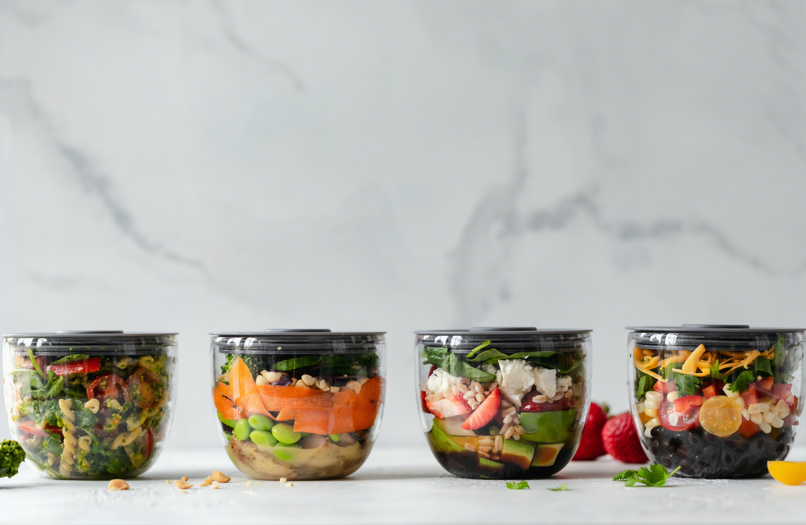

I am a self-taught developer with a passion for learning and problem solving. I have created numerous projects such as APIs and real-world applications. My current skills include Java, Spring Boot, SQL, Test Driven Development, JUnit, JavaFX, PostgreSQL, JSON, RESTful APIs & HTTP Requests (although this is ever-changing). Constantly looking to expand my knowledge is a major aspect in my growth as a developer. I learn and incorporate something new in each of my projects, for example, in my latest project, Till Records, I am taking a major step forward and learning front-end development to become a fullstack developer. To do this i have built an API using Spring Boot and PostgreSQL as well as JUnit for Test Driven Development. With this API built, I am now in the process of learning both React and Angular, one of which will be incorporated into this project to serve as a frontend.
My driving force for learning frontend development comes from my journey in being self-taught. As a self-taught developer, the biggest driving force for me is personal projects. When I have an idea I want to realise that idea from start to finish. Previously, I used JavaFX for the frontend but I want this further and begin creating enterprise-level frontends. To help me achieve this I have enrolled in Codecademy's Pro subscription and I am currently in the process of gaining a professional certificate in frontend development.
My Projects
